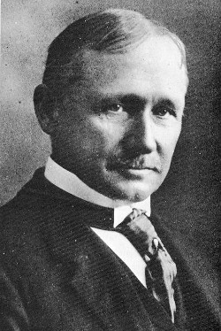
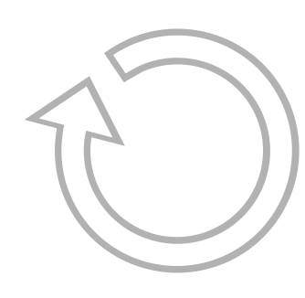
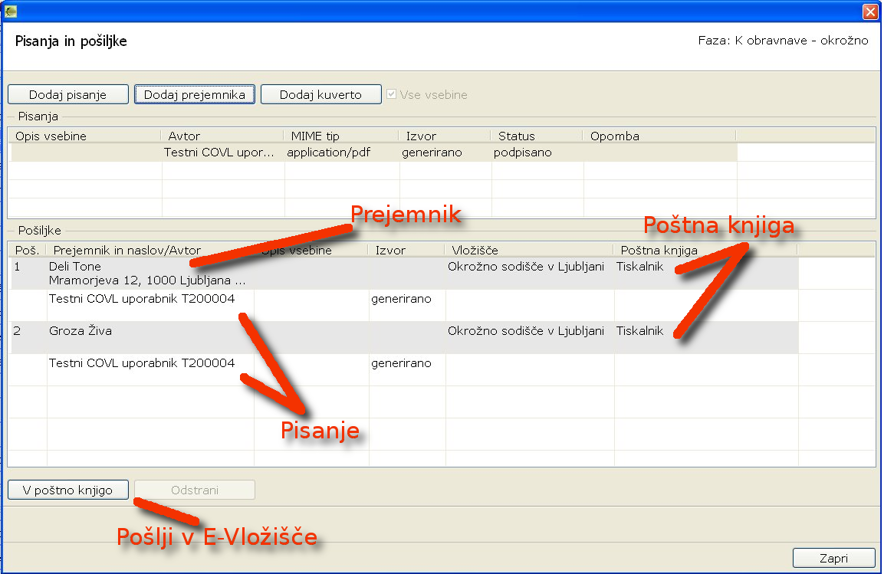
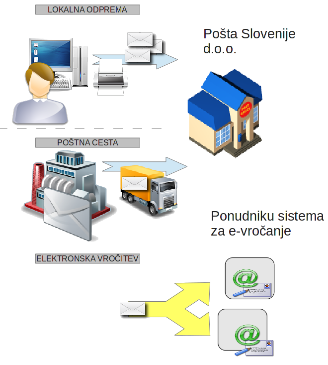

Your browser doesn't support the features required by impress.js, so you are presented with a simplified version of this presentation.
For the best experience please use the latest Chrome, Safari or Firefox browser.
Projekt EVIP (Evidenca vhodne in izhodne pošte)
mag. Petra Čas (Predsednica Okrožnega sod. v Slovenj Gradcu)
Tomaž Tomšič (vodja projekta eVložišče)
mag. Jože Rihtaršič (tehnični vodja projekta eVložišče)
Namen
Do 1900 Več dela se lahko opravi s povečevanjem delovnih ur-> nadure ali zaposlovanje
Frederick Winslow Taylor (1856 - 1915)
Specializacijo in delitvijo dela lahko povečamo učinkovitost proizvodnih procesov.

Aplikacija EVIP (Evidenca vhodne in izhodne pošte)

DOLOČANJE POŠILJKE
Na vpisniku

Izbira vsebine
Izbira naslovnika
Izbira načina vročitve
ODPREMA POŠILJK
- Lokalna odprema: kuvertiranje in odprema na sodišču;
- Poštna cesta: tiskanje pisanj, kuveritranje in odprema pri zunanjem izvajalcu;
- Elektronsko vročanje: elektronsko vročanje pdf vsebin.

Postp
ki vročanja/ način odpreme
Postopek vročitve / način odpreme
Lokalna odprema
Poštna cesta
e-vročanje
Navadno (C5 – bela kuverta)
✓
✓
✓(email)
Priporočeno (C5 – bela kuverta)
✓
o
Priporočeno - tujina (C5 – bela kuverta)
✓
OBR. SR. 38
✓
OBR. SR. 39
✓
Obrazec za K-vpisnik
✓
Slovenija CN 07
✓
tujina CN 07
✓
ZPP navadno
✓
✓
ZPP osebno
✓
✓
✓ SVEV
ZKP navadno
✓
ZKP osebno
✓
ZUP
✓
o
Poštna cesta
VROČANJE POŠILJK
Klasično vročanje
Elektronsko vročanje
Digitalizacija povratnic
Sortiranje povratnic (Tip povratnice in datum vročitve/prvega obvestila)
Skeniranje povratnic
Validacija podatkov na povratnicah
Odprema pisanj z EVIP Kako smo to v sodelovanju s CIF napravili v Slovenj Gradcu
mag. Petra Čas (Predsednica Okrožnega sod. v Slovenj Gradcu)
Priprava
* reorganizacija vložišča
- sodelavci:
prej 2 osebi, zdaj 3
- prostorska preureditev:
prej 1 soba na 15m2
zdaj 3 sobe na 60m2 sprejem+odprema
- dodatna oprema za 1 delovno mesto:
1 računalnik
1 skener črtne kode
1 tiskalnik za kuverte s 5 predali
Reorganizacija v sodnih pisarnahreorganizacija odpreme
- KLASIČNA POŠTA
sodne pisarne I, PUND, Bpp, iK, PR,
pisanja “natisnejo preko EVIP-a” in opremijo (list s črtno kodo, žigi, podpisi, priloge,....), spravijo v “barvne ovitke” in odložijo na prostor za odpremo
uslužbenec vložišča večkrat dnevno pobere ovitke in jih odnese v odpremni center
- VARNI ELEKTRONSKI PREDAL
- E-POŠTA
Reorganizacija v odpremni pisarnievidentiranje in kuvertiranje
- zbrane pošiljke/ovitke I, PUND, Bpp, iK, PR na osnovi črtne kode in EVIP-a skuvertiramo
- na koncu delovnega dne seznam pošiljk elektronsko oddamo na pošto, natisnemo oddajnico